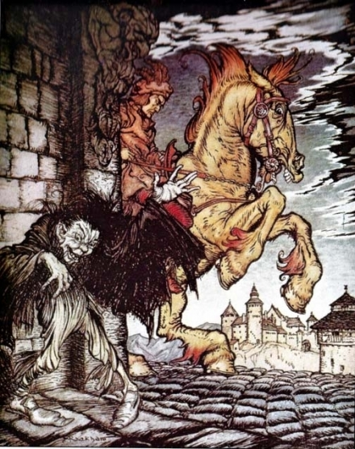

El horror y la fatalidad han estado al acecho en todas las edades. ¿Para qué, entonces, atribuir una fecha a la historia que he de contar? Baste decir que en la época de que hablo existía en el interior de Hungría una firme a unque oculta creencia en las doctrinas de la metempsicosis. Nada diré de las doctrinas mismas, de su falsedad o su probabilidad. Afirmo, sin embargo, que mucha de nuestra incredulidad (como lo dice La Bruyère de nuestra infelicidad) vient de ne pouvoir être seuls.
Pero, en algunos puntos, la superstición húngara se aproximaba mucho a lo absurdo. Diferían en esto por completo de sus autoridades orientales. He aquí un ejemplo: El alma
—afirmaban (según lo hace notar un agudo e inteligente parisiense)— ne demeure qu’une seule fois dans un corps sensible: au reste, un cheval, un chien, un homme même, n’est que la ressemblance peu tangible de ces animaux.
Las familias de Berlifitzing y Metzengerstein hallábanse enemistadas desde hacía siglos. Jamás hubo dos casas tan ilustres separadas por una hostilidad tan letal. El origen de aquel odio parecía residir en las palabras de na antigua profecía: «Un augusto nombre sufrirá una terrible caída cuando, como el jinete en su caballo, la mortalidad de Metzengerstein triunfe sobre la inmortalidad de Berlifitzing.»
Las palabras en sí significaban poco o nada. Pero causas aún más triviales han tenido —y no hace mucho— consecuencias memorables. Además, los dominios de las casas rivales eran contiguos y ejercían desde hacía mucho una influencia rival en los negocios del Gobierno. Los vecinos inmediatos son pocas veces amigos, y los habitantes del castillo de Berlifitzing podían contemplar desde sus encumbrados contrafuertes, las ventanas del palacio de Metzengerstein. La más que feudal magnificencia de este último se prestaba muy poco a mitigar los irritables sentimientos de los Berlifitzing, menos antiguos y menos acaudalados. ¿Cómo maravillarse entonces de que las tontas palabras de una profecía lograran hacer estallar y mantener vivo el antagonismo entre dos familias ya predispuestas a querellarse por todas las razones de un orgullo hereditario? La profecía parecía entrañar —si entrañaba alguna cosa— el triunfo final de la casa más poderosa, y los más débiles y menos influyentes la recordaban con amargo resentimiento.
Wilhelm, conde de Berlifitzing, aunque de augusta ascendencia, era, en el tiempo de nuestra narración, un anciano inválido y chocho que sólo se hacía notar por una excesiva cuanto inveterada antipatía personal hacia la familia de su rival, y por un amor apasionado hacia la equitación y la caza, a cuyos peligros ni sus achaques corporales ni su incapacidad mental le impedían dedicarse diariamente.
Frederick, barón de Metzengerstein, no había llegado, en cambio, a la mayoría de edad. Su padre, el ministro G..., había muerto joven, y su madre, lady Mary, lo siguió muy pronto. En aquellos días, Frederick tenía dieciocho años. No es ésta mucha edad en las ciudades; pero en una soledad, y en una soledad tan magnífica como la de aquel antiguo principado, el péndulo vibra con un sentido más profundo.
Debido a las peculiares circunstancias que rodeaban la administración de su padre, el joven barón heredó sus vastas posesiones inmediatamente después de muerto aquél. Pocas veces se había visto a un noble húngaro dueño de semejantes bienes. Sus castillos eran incontables. El más esplendoroso, el más amplio era el palacio Metzengerstein. La línea limítrofe de sus dominios no había sido trazada nunca claramente, pero su parque principal comprendía un circuito de cincuenta millas.
En un hombre tan joven, cuyo carácter era ya de sobra conocido, semejante herencia permitía prever fácilmente su conducta venidera. En efecto, durante los tres primeros días, el comportamiento del heredero sobrepasó todo lo imaginable y excedió las esperanzas de sus más entusiastas admiradores. Vergonzosas orgías, flagrantes traiciones, atrocidades inauditas, hicieron comprender rápidamente a sus temblorosos vasallos que ninguna sumisión servil de su parte y ningún resto de conciencia por parte del amo proporcionarían en adelante garantía alguna contra las garras despiadadas de aquel pequeño Calígula. Durante la noche del cuarto día estalló un incendio en las caballerizas del castillo de Berlifitzing, y la opinión unánime agregó la acusación de incendiario a la ya horrorosa lista de los delitos y enormidades del barón.
Empero, durante el tumulto ocasionado por lo sucedido, el joven aristócrata hallábase aparentemente sumergido en la meditación en un vasto y desolado aposento del palacio solariego de Metzengerstein. Las ricas aunque desvaídas colgaduras que cubrían lúgubremente las paredes representaban imágenes sombrías y majestuosas de mil ilustres antepasados. Aquí, sacerdotes de manto de armiño y dignatarios pontificios, familiarmente sentados junto al autócrata y al soberano, oponían su veto a los deseos de un rey temporal, o contenían con el fiat de la supremacía papal el cetro rebelde del archienemigo. Allí, las atezadas y gigantescas figuras de los príncipes de Metzengerstein, montados en robustos corceles de guerra, que pisoteaban al enemigo caído, hacían sobresaltar al más sereno contemplador con su expresión vigorosa; y otra vez aquí, las figuras voluptuosas, como de cisnes, de las damas de antaño, flotaban en el laberinto de una danza irreal, al compás de una imaginaria melodía.
Pero mientras el barón escuchaba o fingía escuchar el creciente tumulto en las caballerizas de Berlifitzing —y quizá meditaba algún nuevo acto, aún más audaz—, sus ojos se volvían distraídamente hacia la imagen de un enorme caballo, pintado con un color que no era natural, y que aparecía en las tapicerías como perteneciente a un sarraceno, antecesor de la familia de su rival. En el fondo de la escena, el caballo permanecía inmóvil y estatuario, mientras aún más lejos su derribado jinete perecía bajo el puñal de un Metzengerstein.
En los labios de Frederick se dibujó una diabólica sonrisa, al darse cuenta de lo que sus ojos habían estado contemplando inconscientemente. No pudo, sin embargo, apartarlos de allí. Antes bien, una ansiedad inexplicable pareció caer como un velo fúnebre sobre sus sentidos. Le resultaba difícil conciliar sus soñolientas e incoherentes sensaciones con la certidumbre de estar despierto. Cuanto más miraba, más absorbente se hacía aquel encantamiento y más imposible parecía que alguna vez pudiera alejar sus ojos de la fascinación de aquella tapicería. Pero como afuera el tumulto era cada vez más violento, logró, por fin, concentrar penosamente su atención en los rojizos resplandores que las incendiadas caballerizas proyectaban sobre las ventanas del aposento.
Con todo, su nueva actitud no duró mucho y sus ojos volvieron a posarse mecánicamente en el muro. Para su indescriptible horror y asombro, la cabeza del gigantesco corcel parecía haber cambiado, entretanto, de posición. El cuello del animal, antes arqueado como si la compasión lo hiciera inclinarse sobre el postrado cuerpo de su amo, tendíase ahora en dirección al barón. Los ojos, antes invisibles, mostraban una expresión enérgica y humana, brillando con un extraño resplandor rojizo como de fuego; y los abiertos belfos de aquel caballo, aparentemente enfurecido, dejaban a la vista sus sepulcrales y repugnantes dientes.
Estupefacto de terror, el joven aristócrata se encaminó, tambaleante, hacia la puerta. En el momento de abrirla, un destello de luz roja, inundando el aposento, proyectó claramente su sombra contra la temblorosa tapicería, y Frederick se estremeció al percibir que aquella sombra (mientras él permanecía titubeando en el umbral) asumía la exacta posición y llenaba completamente el contorno del triunfante matador del sarraceno Berlifitzing.
Para calmar la depresión de su espíritu, el barón corrió al aire libre. En la puerta principal del palacio encontró a tres escuderos. Con gran dificultad, y a riesgo de sus vidas, los hombres trataban de calmar los convulsivos saltos de un gigantesco caballo de color de fuego.
—¿De quién es este caballo? ¿Dónde lo encontrasteis? —demandó el joven, con voz tan sombría como colérica, al darse cuenta de que el misterioso corcel de la tapicería era la réplica exacta del furioso animal que estaba contemplando.
—Es vuestro, sire —repuso uno de los escuderos—, o, por lo menos, no sabemos que nadie lo reclame. Lo atrapamos cuando huía, echando humo y espumante de rabia, de las caballerizas incendiadas del conde de Berlifitzing. Suponiendo que era uno de los caballos extranjeros del conde, fuimos a devolverlo a sus hombres. Pero éstos negaron haber visto nunca al animal, lo cual es raro, pues bien se ve que escapó por muy poco de perecer en las llamas.
—Las letras W. V. B. están claramente marcadas en su frente —interrumpió otro escudero—. Como es natural, pensamos que eranlas iniciales de Wilhelm Von Berlifitzing, pero en el castillo insisten en negar que el caballo les pertenezca.
—¡Extraño, muy extraño! —dijo el joven barón con aire pensativo, y sin cuidarse, al parecer, del sentido de sus palabras—. En efecto, es un caballo notable, un caballo prodigioso... aunque, como observáis justamente, tan peligroso como intratable... Pues bien, dejádmelo —agregó, luego de una pausa—. Quizá un jinete como Frederick de Metzengerstein sepa domar hasta el diablo de las caballerizas de Berlifitzing.
—Os engañáis, señor; este caballo, como creo haberos dicho, no proviene de las caballadas del conde. Si tal hubiera sido el caso, conocemos demasiado bien nuestro deber para traerlo a presencia de alguien de vuestra familia.
—¡Cierto! —observó secamente el barón.
En ese mismo instante, uno de los pajes de su antecámara vino corriendo desde el
palacio, con el rostro empurpurado. Habló al oído de su amo para informarle de la repentina
desaparición de una pequeña parte de las tapicerías en cierto aposento, y agregó numerosos
detalles tan precisos como completos. Como hablaba en voz muy baja, la excitada
curiosidad de los escuderos quedó insatisfecha.
Mientras duró el relato del paje, el joven Frederick pareció agitado por encontradas emociones. Pronto, sin embargo, recobró la compostura, y mientras se difundía en su rostro una expresión de resuelta malignidad, dio perentorias órdenes para que el aposento en cuestión fuera inmediatamente cerrado y se le entregara al punto la llave.
—¡No! —exclamó el barón, volviéndose bruscamente hacia el que había hablado—.
¿Muerto, dices?
—Por cierto que sí, sire, y pienso que para el noble que ostenta vuestro nombre no será
una noticia desagradable.
Una rápida sonrisa pasó por el rostro del barón.
—¿Cómo murió?
—Entre las llamas, esforzándose por salvar una parte de sus caballos de caza favoritos.
—¡Re...al...mente! —exclamó el barón, pronunciando cada sílaba como si una
apasionante idea se apoderar a en ese momento de él.
—¡Realmente! —repitió el vasallo.
—¡Terrible! —dijo serenamente el joven, y se volvió en silencio al palacio.
Desde aquel día, una notable alteración se manifestó en la conducta exterior del
disoluto barón Frederick de Metzengerstein. Su comportamiento decepcionó todas las
expectativas, y se mostró en completo desacuerdo con las esperanzas de muchas damas,
madres de hijas casaderas; al mismo tiempo, sus hábitos y manera de ser siguieron
diferenciándose más que nunca de los de la aristocracia circundante. Jamás se le veía fuera
de los límites de sus dominios, y en aquellas vastas extensiones parecía andar sin un solo
amigo —a menos que aquel extraño, impetuoso corcel de ígneo color, que montaba
continuamente, tuviera algún misterioso derecho a ser considerado como su amigo.
Durante largo tiempo, empero, llegaron a palacio las invitaciones de los nobles vinculados con su casa. «¿Honrará el barón nuestras fiestas con su presencia?» «¿Vendrá el barón a cazar con nosotros el jabalí?» Las altaneras y lacónicas respuestas eran siempre:«Metzengerstein no irá a la caza», o «Metzengerstein no concurrirá».
Aquellos repetidos insultos no podían ser tolerados por una aristocracia igualmente altiva. Las invitaciones se hicieron menos cordiales y frecuentes, hasta que cesaron por completo. Incluso se oyó a la viuda del infortunado conde Berlifitzing expresar la esperanza de que «el barón tuviera que quedarse en su casa cuando no deseara estar en ella, ya que desdeñaba la sociedad de sus pares, y que cabalgara cuando no quisiera cabalgar, puesto que prefería la compañía de un caballo». Aquellas palabras eran sólo el estallido de un rencor hereditario, y servían apenas para probar el poco sentido que tienen nuestras frases cuando queremos que sean especialmente enérgicas.
Los más caritativos, sin embargo, atribuían aquel cambio en la conducta del joven noble a la natural tristeza de un hijo por la prematura pérdida de sus padres; ni que decir que echaban al olvido su odiosa y desatada conducta en el breve período inmediato a aquellas muertes. No faltaban quienes presumían en el barón un concepto excesivamente altanero de la dignidad. Otros —entre los cuales cabe mencionar al médico de la familia— no vacilaban en hablar de una melancolía morbosa y mala salud hereditaria; mientras la multitud hacía correr oscuros rumores de naturaleza aún más equívoca.
Por cierto que el obstinado afecto del joven hacia aquel caballo de reciente adquisición —afecto que parecía acendrarse a cada nueva prueba que daba el animal de sus feroces y demoniacas tendencias— terminó por parecer tan odioso como anormal a ojos de todos los hombres de buen sentido. Bajo el resplandor del mediodía, en la oscuridad nocturna, enfermo o sano, con buen tiempo o en plena tempestad, el joven Metzengerstein parecía clavado en la montura del colosal caballo, cuya intratable fiereza se acordaba tan bien con su propia manera de ser.
Agregábanse además ciertas circunstancias que, unidas a los últimos sucesos, conferían un carácter extraterreno y portentoso a la manía del jinete y a las posibilidades del caballo. Habíase medido cuidadosamente la longitud de alguno de sus saltos, que excedían de manera asombrosa las más descabelladas conjeturas. El barón no había dado ningún nombre a su caballo, a pesar de que todos los otros de su propiedad los tenían. Su caballeriza, además, fue instalada lejos de las otras, y sólo su amo osaba penetrar allí y acercarse al animal para darle de comer y ocuparse de su cuidado. Era asimismo de observar que, aunque los tres escuderos que se habían apoderado del caballo cuando escapaba del incendio en la casa de los Berlifitzing, lo habían contenido por medio de una cadena y un lazo, ninguno podía afirmar con certeza que en el curso de la peligrosa lucha, o en algún momento más tarde, hubiera apoyado la mano en el cuerpo de la bestia. Si bien los casos de inteligencia extraordinaria en la conducta de un caballo lleno de bríos no tienen por qué provocar una atención fuera de lo común, ciertas circunstancias se imponían por la fuerza aun a los más escépticos y flemáticos; se afirmó incluso que en ciertas ocasiones la boquiabierta multitud que contemplaba a aquel animal había retrocedido horrorizada ante el profundo e impresionante significado de la terrible apariencia del corcel; ciertas ocasiones en que aun el joven Metzengerstein palidecía y se echaba atrás, evitando la viva, la interrogante mirada de aquellos ojos que parecían humanos.
Empero, en el séquito del barón nadie ponía en duda el ardoroso y extraordinario efecto que las fogosas características de su caballo provocaban en el joven aristócrata; nadie, a menos que mencionemos a un insignificante pajecillo contrahecho, que interponía su fealdad en todas partes y cuyas opiniones carecían por completo de importancia. Este paje (si vale la pena mencionarlo) tenía el descaro de afirmar que su amo jamás se instalaba en la montura sin un estremecimiento tan imperceptible como inexplicable, y que al volver de sus largas y habituales cabalgatas, cada rasgo de su rostro aparecía deformado por una expresión de triunfante malignidad.
Una noche tempestuosa, al despertar de un pesado sueño, Metzengerstein bajó como un maniaco de su aposento y, montando a caballo con extraordinaria prisa, se lanzó a las profundidades de la floresta. Una conducta tan habitual en él no llamó especialmente la atención, pero sus domésticos esperaron con intensa ansiedad su retorno cuando, después de algunas horas de ausencia, las murallas del magnífico y suntuoso palacio de los Metzengerstein comenzaron a agrietarse y a temblar hasta sus cimientos, envueltas en la furia ingobernable de un incendio.
Aquellas lívidas y densas llamaradas fueron descubiertas demasiado tarde; tan terrible era su avance que, comprendiendo la imposibilidad de salvar la menor parte del edificio, la muchedumbre se concentró cerca del mismo, envuelta en silencioso y patético asombro. Pero pronto un nuevo y espantoso suceso reclamó el interés de la multitud, probando cuánto más intensa es la excitación que provoca la contemplación del sufrimiento humano, que los más espantosos espectáculos que pueda proporcionar la materia inanimada.
Por la larga avenida de antiguos robles que llegaba desde la floresta a la entrada principal del palacio se vio venir un caballo dando enormes saltos, semejante al verdadero Demonio de la Tempestad, y sobre el cual había un jinete sin sombrero y con las ropas revueltas.
Veíase claramente que aquella carrera no dependía de la voluntad del caballero. La agonía que se reflejaba en su rostro, la convulsiva lucha de todo su cuerpo, daban pruebas de sus esfuerzos sobrehumanos; pero ningún sonido, salvo un solo alarido, escapó de sus lacerados labios, que se había mordido una y otra vez en la intensidad de su terror. Transcurrió un instante, y el resonar de los cascos se oyó clara y agudamente sobre el rugir de las llamas y el aullar de los vientos; pasó otro instante y, con un solo salto que le hizo franquear el portón y el foso, el corcel penetró en la escalinata del palacio llevando siempre a su jinete y desapareciendo en el torbellino de aquel caótico fuego.
La furia de la tempestad cesó de inmediato, siendo sucedida por una profunda y sorda calma. Blancas llamas envolvían aún el palacio como una mortaja, mientras en la serena atmósfera brillaba un resplandor sobrenatural que llegaba hasta muy lejos; entonces una nube de humo se posó pesadamente sobre las murallas, mostrando distintamente la colosal figura de... un caballo.
La historia se centra en el joven Frederick, el último descendiente de la familia Metzengerstein, que carga con una prolongada rivalidad con la familia Berlifitzing. Sospechoso de haber causado un incendio que mató al patriarca de los Berlifitzing, Frederick se obsesiona con un caballo salvaje que no había notado anteriormente. Metzengerstein es castigado por su crueldad cuando su propio hogar se incendia y el caballo lo lleva hasta las llamas. La historia sigue muchas de las convenciones de la ficción gótica, pero a veces cae en la sátira o en la parodia del género.